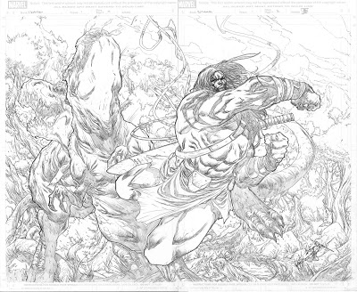

The Ever-changing styles of Brian Ching
I live in Southern California where it's 90 degrees in the Summer and 70 degrees in the Winter and yet I still find ways to complain.
My Work on Skaar for Marvel Comics
Page from Skaar: King of the Savage Land, pencils by Brian Ching
This is a page from my work on the Marvel series "Skaar: King of the Savage Land." Below is the finished piece with inks by Rick Ketchum and colors by Guru-eFX.